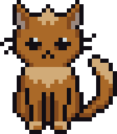
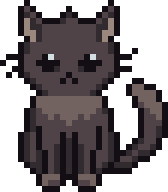
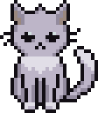

Cute pixel cats that live at the bottom of your screen.
They wander, groom, nap, and get startled when you toss them. Pure eye candy.
macOS (Apple Silicon) · Windows 10+ · free & open source
Cats stroll along the bottom of your screen and mostly sit, groom, and chill.
Idle long enough and they curl up to sleep — poke a sleeping cat and it hisses.
Pick a cat up and put it anywhere. Drop it on the trash to give it away.
Three colors, up to three each. Mix and match your little colony.
One click to put the whole colony to bed — or wake everyone up.
Lives quietly in the menu bar / system tray. English & 한국어 built in.

Ginger
Grey
White